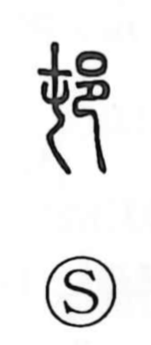

村

Uncategorized
Kun: mura | On: son
village ・ hamlet
Explanation
A phono-semantic graph. The element 寸 serves as the phonetic, giving the on-yomi son (as in 忖 “to gauge”). In earlier times the word was written 邨, a form composed of 屯 and 邑. Shirakawa explains 邑 as a picture of a walled enclosure with a kneeling person within, expressing people gathered inside fortifications and, by extension, meanings such as capital, town, and village. From the Eastern Jin period onward—already seen in Tao Yuanming’s writings—the form 村 came into use and thereafter became the customary character for “village.”